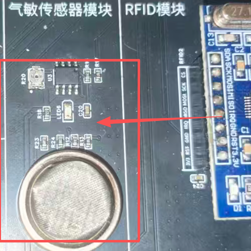
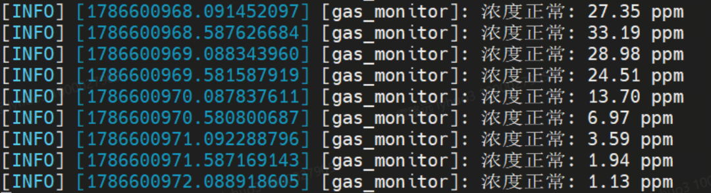

ROS2 话题通讯原理（MQ5 气体传感器）
传感器数据像河水一样持续流动，如何让"生产数据的节点"和"使用数据的节点"互不干扰地协作？本实验以真实 MQ5 可燃气体传感器为载体，讲透 ROS2 发布/订阅模型、QoS 三要素与 MQ5 对数换算三条原理主线，并完成"DAC 采集 → 物理量换算 → Float32 发布 → 报警判定"全链路实操。
01为什么需要话题：持续数据流的协作难题
假设你要做一个厨房安全监控：gas_sensor_node 每秒读一次 MQ5 浓度，而监控大屏、报警器、数据记录器三个程序都想同时拿到这份数据。如果让读传感器的程序挨个打电话喂给它们，会怎样？
02核心原理：发布/订阅是如何解耦的
传统"客户端-服务器"模型里，双方必须互相认识；而发布/订阅把通信中间加了一个以话题名为键的"全局数据空间"：发布者只管把消息放进去，订阅者只管从里面取，二者从不直接对话。
create_publisher(类型, 话题, QoS) 声明"我在这个话题发这种消息"，publish() 只把消息丢进 DDS 发送队列即返回。create_subscription(类型, 话题, 回调, QoS) 注册回调；消息到达后由 Executor 调度执行，事件驱动、不空转轮询。| 对比维度 | 话题（本实验） | 服务（EXP-07） |
|---|---|---|
| 通信关系 | 一对多，多对多 | 一对一 |
| 是否阻塞 | 异步，发完即走 | 同步，等应答 |
| 数据方向 | 持续单向流 | 请求 → 应答往返 |
| 典型场景 | 传感器读数、速度指令 | 查询、校准、触发一次动作 |
ros2 topic info /gas_sensor 可以看到 Type、Publisher 数与 Subscription 数——"谁在发、谁在收"一目了然，无需读任何代码。03原理动画：一条消息的分发之旅
下面的动画循环演示：发布者把 Float32 消息推入话题 → DDS 按 QoS 队列分发 → 三个订阅者各自收到副本。注意两端的"齿轮"（QoS）必须咬合才会连通。
04QoS 三要素：通信行为的"合同条款"
QoS（Quality of Service）决定消息怎么传、传多少、留多久。三个核心维度各有两种常见取值：
BEST_EFFORT：丢了就丢，追求低延迟——激光雷达点云常用。
TRANSIENT_LOCAL：保留"最后一句"，晚来的订阅者先补发（如地图话题）。
KEEP_ALL：全部保留——可能撑爆内存，慎用。
| 本实验配置 | 发布端 gas_sensor_node | 订阅端 gas_monitor |
|---|---|---|
| Reliability | RELIABLE | RELIABLE（必须一致） |
| History | KEEP_LAST, depth=10 | KEEP_LAST, depth=10 |
| Durability | VOLATILE（默认） | VOLATILE（默认） |
05互动沙盒：亲手配对 QoS
分别设置发布端与订阅端的 QoS，观察 DDS 是否允许它们建立连接，并读出系统给出的诊断消息：
📤 发布端 gas_sensor_node
📥 订阅端 gas_monitor
互动 6-1｜请求 ≤ 提供才连得上：试着把订阅端改成 RELIABLE、发布端改成 BEST_EFFORT，看红色告警
06专题：MQ5 从电压到 ppm 的对数换算
MQ5 是半导体气敏元件：接触可燃气体时内阻下降。电路把电阻变化转成分压电压，但电压与浓度不是线性关系——MQ5 灵敏特性曲线在双对数坐标下才近似直线，所以必须在对数域插值。
# 换算核心（ros_sensor/common.py L25-33） V_REF, RL, R0 = 5.0, 1.0, 10.0 # 参考电压、负载电阻 kΩ、标定电阻 kΩ CURVE_B, CURVE_M = 0.186, -0.362 # 灵敏特性曲线截距与斜率（负斜率！） rs = RL * (V_REF - v) / v # ③ 分压原理反推气敏电阻 Rs ratio = rs / R0 # ③ 与标定点的比值 ppm = 10 ** ((math.log10(ratio) - CURVE_B) / CURVE_M) # ④ 对数域线性插值
互动 6-2｜拖动/输入不同电压，观察 ratio 与 ppm 如何沿对数曲线变化（量程 0.05–4.95 V）
07代码精讲与数据流
发布端三部曲：声明参数 → 配置 QoS 并 create_publisher → 定时回调里采样并 publish；订阅端镜像对称。
# 发布端 gas_sensor_node.py（节选，L16-44） class GasSensorNode(Node): def __init__(self): super().__init__('gas_sensor_node') self.declare_parameter('publish_period', 1.0) # ① 参数先行 qos = QoSProfile(history=HistoryPolicy.KEEP_LAST, depth=10, reliability=ReliabilityPolicy.RELIABLE) # ② QoS 合同 self.pub = self.create_publisher(Float32, '/gas_sensor', qos) period = float(self.get_parameter('publish_period').value) self.timer = self.create_timer(period, self.timer_cb) # ③ 定时驱动 def timer_cb(self): raw, v, ppm, err = read_mq5_once() # 读 ADC 四步换算 if err: self.get_logger().error(f'读取 ADC 失败: {err}'); return msg = Float32(); msg.data = float(ppm) self.pub.publish(msg) # 入队即返回，异步！ # 订阅端 gas_monitor.py（节选，L13-36） def __init__(self): # ... QoS 必须与发布端一致（RELIABLE + KEEP_LAST(10)） self.sub = self.create_subscription( Float32, '/gas_sensor', self.callback, qos) # 注册回调 def callback(self, msg): # 消息到达才被调用 if msg.data >= self.threshold: self.get_logger().warn(f'[报警] 浓度超标: {msg.data:.2f} ppm')
# 终端 C：系统自省四件套 ros2 node list # /gas_sensor_node /gas_monitor ros2 topic info /gas_sensor # Type + Pub/Sub count ros2 topic echo /gas_sensor # 实时打印 data: 312.45 ros2 topic hz /gas_sensor # average rate: 1.000 Hz
declare_parameter 就 get_parameter → 运行时报"参数未声明"；② 命令行覆盖参数必须用 :=（-p publish_period:=0.5），写成 = 无效。08实操流程
# 步骤 1：编译（首改代码后必须重新 source！） cd ~/ros2_ws && source /opt/ros/humble/setup.bash colcon build --symlink-install --packages-select ros_sensor ros_sensor_interfaces source install/setup.bash # 步骤 5：三个终端 # 终端 A ros2 run ros_sensor gas_sensor_node # 每秒输出 raw/voltage/ppm # 终端 B ros2 run ros_sensor gas_monitor # 每秒输出 浓度正常: xxx ppm # 终端 C ros2 topic echo /gas_sensor && ros2 topic hz /gas_sensor # 步骤 6：动态调参（注意 := 语法） ros2 run ros_sensor gas_sensor_node --ros-args -p publish_period:=0.5 # 频率 → 2Hz ros2 run ros_sensor gas_monitor --ros-args -p alarm_threshold:=100.0 # 触发报警
[报警] 日志——这是话题链路 + 换算公式同时正确的铁证。📸 指导书实操与现象截图（2 图）


09注意事项与验收清单
| ⚠️ 注意项 | 说明 |
|---|---|
| QoS 一致性 | 发布/订阅端须同为 Reliable + KeepLast(10)，否则可能收不到消息 |
| 环境加载 | 每次新开终端都要 source install/setup.bash |
| 话题命名 | /gas_sensor 以 / 开头为全局命名空间 |
| 安全提示 | MQ5 通电后表面发热勿用手触；测试仅低浓度演示，严禁明火 |
- 双节点运行，ros2 node list 同时显示两个节点
- ros2 topic info /gas_sensor 显示 Pub=1、Sub≥1，类型 std_msgs/msg/Float32
- ros2 topic hz ≈ 1.000 Hz，改 publish_period:=0.5 后变 ≈ 2Hz
- 第三方 ros2 topic echo 可同时接收（一对多验证）
- 调低 alarm_threshold:=100.0 后出现 [报警] 日志
- 口头解释：为什么发布端不用知道订阅端 IP？MQ5 对数换算四步链路？
10实验总结与思考题
--ros-args -p 动态调参。